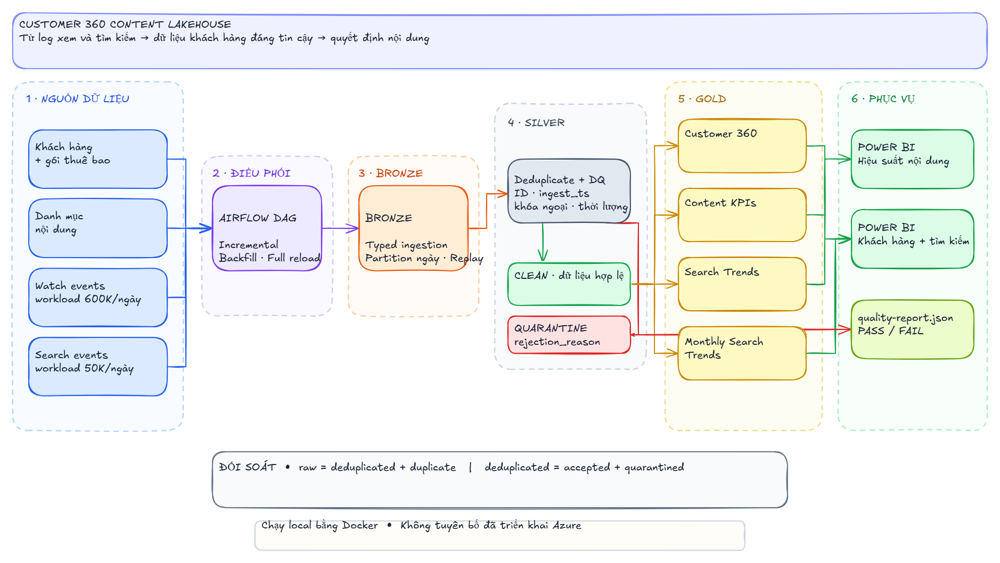

Phân mảnh
Khách hàng, gói thuê bao, nội dung, lượt xem và tìm kiếm nằm ở nhiều nguồn.
Customer 360
Từ log xem và tìm kiếm rời rạc đến dữ liệu khách hàng đáng tin cậy cho Power BI.
01 — Bài toán
Khách hàng, gói thuê bao, nội dung, lượt xem và tìm kiếm nằm ở nhiều nguồn.
Bản ghi trùng, khóa ngoại sai và thời lượng bất hợp lệ làm lệch KPI.
Cần chạy hằng ngày, backfill khi lỗi và full reload khi tái tạo dữ liệu.
Mục tiêu: một pipeline có thể chạy lại, kiểm chứng được và phục vụ dashboard ngay.
02 — Quy mô thiết kế
Nội dung đã xem, thời lượng, thiết bị, phiên và thời điểm phát sinh.
Từ khóa, kết quả, lượt nhấp và tín hiệu nhu cầu nội dung.
03 — Kiến trúc tổng thể

04 — Điều phối
Chỉ xử lý partition mới, phù hợp lịch production.
Chọn khoảng ngày để khôi phục dữ liệu bị trễ hoặc lỗi.
Xây lại toàn bộ lớp dữ liệu khi logic nghiệp vụ đổi.
Tham số hóa giúp tránh sao chép DAG và giữ cùng một đường kiểm soát chất lượng.
05 — Medallion
Có ingest timestamp và nguồn gốc bản ghi.
Bản ghi lỗi đi vào quarantine, không bị mất.
Bảng Gold có grain rõ ràng cho từng KPI.
06 — Data Quality
raw = deduplicated + duplicate
deduplicated = accepted + quarantined
ID bắt buộc và không trùng.
Khóa ngoại phải tồn tại.
Thời lượng và timestamp hợp lệ.
Quality gate tự động PASS / FAIL.
07 — Data Products
Ai đang xem gì, mức độ tương tác và phân khúc thuê bao?
Nội dung nào có lượt xem, thời lượng và completion tốt?
Từ khóa nào đang nổi lên theo ngày và có chuyển đổi?
Nhu cầu thay đổi ra sao giữa các tháng?
08 — Power BI
Watch time, completion, nội dung tăng/giảm và cohort theo thiết bị.
Phân khúc thuê bao, mức tương tác và hành vi tìm kiếm.
Từ khóa nổi bật, zero-result search và xu hướng theo tháng.
Nguyên tắc: logic nghiệp vụ nằm trong pipeline; Power BI tập trung vào phân tích và kể chuyện.
09 — Chạy local
Docker đóng gói môi trường chạy.
Dữ liệu mẫu tạo có seed, kết quả lặp lại được.
MinIO mô phỏng object storage.
GitHub Actions chạy kiểm tra tự động.
10 — Bằng chứng chạy thật
Hồ sơ khách hàng được tổng hợp ở Gold.
Tổ hợp nội dung/ngày đã sẵn sàng phân tích.
3 watch + 3 search; đều có rejection reason.
Ngày gần nhất: watch 252 raw → 250 dedup → 247 accepted; search 42 raw → 40 dedup → 37 accepted.
11 — Điều dự án chứng minh
Thiết kế grain, partition và data contract.
Idempotency, backfill và reconciliation.
Tách dữ liệu lỗi khỏi dữ liệu phục vụ.
Đóng gói local + CI để người khác tái hiện.
“Tôi tối ưu cho tính đúng, khả năng chạy lại và khả năng kiểm chứng trước; sau đó mới mở rộng cùng pattern lên Azure.”
Tóm tắt
Customer 360 Content Lakehouse biến hành vi rời rạc thành dữ liệu có thể đối soát, chạy lại và dùng ngay.
Mở file ghi chú đi kèm để đọc phần giải thích chi tiết theo từng slide.